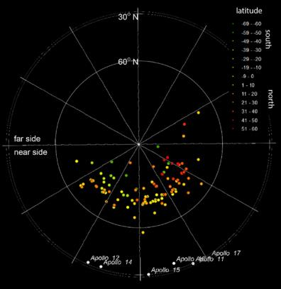
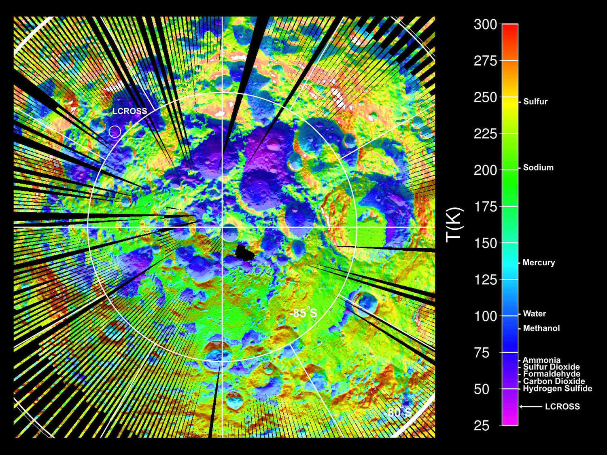
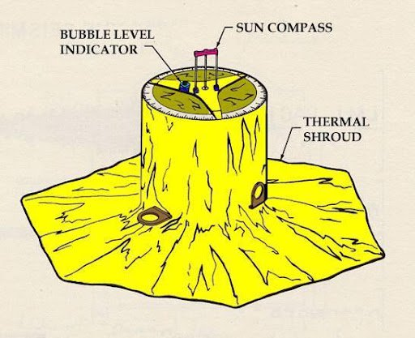
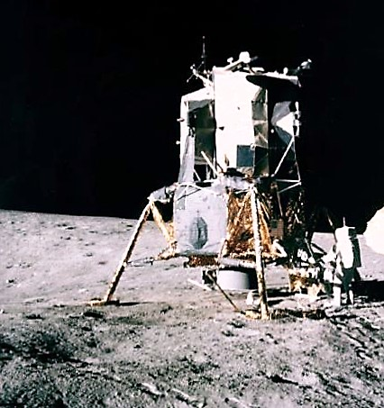

OTHER MAPS AND PHOTOS

Moonquakes Map - 2005
The near side of the Moon with the epicentral locations of moonquake clusters (Nakamura ,2005)

Latest Seismic Datas - 2023
The vibrations recorded during the Chandrayaan-3's navigation on August 26, 2023, are depicted in the figure. (These seismic data are the most recent seismic data discovered since 1977.) (ISRO ,2023)
Latest Seismic Datas - 2023
The vibrations recorded during the Chandrayaan-3's navigation on August 25, 2023, are depicted in the figure. (These seismic data are the most recent seismic data discovered since 1977.) (ISRO ,2023)

Seismic Stations - 2022
The locations of the seismic stations. The plot shows the locations of the stations included in the archive. The background shows lunar topography from Araki et al. (Nakamura ,2022)

3-D hypocenter plot of the same
clusters in a north-polar projection. The dots are color-coded by
their latitudes. The red and orange dots are in the northern hemisphere
and the green and yellow dots are in the southern hemisphere.
3D Moonquake Map - 2019
3-D hypocenter plot of the same
clusters in a north-polar projection. The dots are color-coded by
their latitudes. The red and orange dots are in the northern hemisphere
and the green and yellow dots are in the southern hemisphere.
(NASA Planetary Data System , 2019 )
Young Thrust Fault-2019
An animation showing the moon’s Lee Lincoln
scarp, where a young thrust fault was found.
(The New York Times, 2019 )
Types of Moonquakes Map - 2019
6 Locations of impacts and moonquakes on the lunar nearside. The locations of (a) artificial impacts, (b) meteoroid impacts, (c) shallow moonquakes, (d) and (e) deep moonquakes from different studies are displayed. (NASA Planetary Data System , 2019 )

Shrinking Moon - 2019
This prominent lunar lobate thrust fault scarp is one of thousands discovered in Lunar Reconnaissance Orbiter Camera images. The fault scarp or cliff is like a stair-step in the lunar landscape (left-pointing white arrows) formed when the near-surface crust is pushed together, breaks, and is thrust upward along a fault as the Moon contracts.(NASA, 2019)
Seismic Datas- 2017
These seismograms showed marked differences
from their terrestrial counterparts. The time marks on the above
seismograms are spaced 10 minutes apart.
(AUSTRALIAN SPACE ACADEMY, 2017 )
Moonquake Map - 2017
Map of the Moon centered on the near side, showing the location of the four lunar seismometers (yellow triangles) and all seismic events used in this study (blue dots:
impacts, green dots: shallow moonquakes, red dots: deep moonquakes).
(Science Direct , 2017 )
Moonquakes Map - 2015
The figure shows Apollo stations
12, 14, 15, and 16 (white triangles), along with the locations of 24
deep-event clusters (red stars), 8 shallow events (black stars), 19
meteoroid impacts (black circles), and 8 artificial impacts (orange circles).
(Science Direct, 2015)
Deep Moonquakes Map - 2012
(A) Distribution of the deep moonquake (DMQ) nests and FeO weight percents centered on the nearside. White contours outline 13 wt.% FeO and triangles representlocations of the DMQ nests. (B) Adapted from Wilhelms (1977) and Wieczorek et al. (2001), this map shows mare basalt distribution from geologic mapping.(Science Direct, 2012)
Deep Moonquakes Map - 2011
Map of the lunar nearside showing the locations of the Apollo seismic stations (red diamonds) and the distribution of the deep moonquake epicenters used in this study (white circles). (Renee C. Weber , 2011)

Deep Moonquakes Map - 2011
Schematic meridional cross-section of the Moon showing the distribution of deep moonquakes (red circles) and the potential radii of physical layers in the deepest lunar interior (Science ,2011)

Thermal Map of the Moon-2010
LRO Diviner Lunar Radiometer Experiment surface temperature map of the south polar region of the moon. (NASA Media Telecon: LCROSS and LRO Science Science Results of Lunar Impact ,2010)

Meteor Impacts - 2010
Using measurements taken by an instrument onboard NASA's Lunar Reconnaissance Orbiter spacecraft, researchers have mapped all large craters on the moon. In this image, blue indicates low elevation, and red indicates high elevation. (MIT News, 2010)

Seismic Experiments - 2008
Labeled sketch of Apollo 12, 14, 15, and 16 Passive Seismic Experiments.(NASA, 2008)

The details of a seismometer which
was set up in moon’s surface(Apollo 12)
Details of Seismometer - 2008
The details of a seismometer which
was set up in moon’s surface(Apollo 12)
(NASA, 2008)
Seismic Datas - 2008
From top to bottom, examples of waveforms for natural impacts (a), artificial impacts (b), a shallow event (c), and deep moonquakes (d–f) recorded on LP channels by the Apollo passive seismic network. All records span 55 min, with the x-axis representing time in minutes and the y-axis representing digital units.(Science Direct, 2008)
Deep Moonquakes Map - 2005
Computed epicentral locations of deep moonquakes on the frontside of the Moon. The base map is in
Lambert azimuthal equal-area projection. The squares with
numbers indicate the locations of the four Apollo stations
constituting the seismic network.
(Nakamura, 2005)
Deep Moonquakes Map - 2005
Schematic diagram of the lunar interior showing foci of moonquakes (Nakamura, 2005)
Shallow Moonquakes Map - 1985
Shallow moonquake epicenters. The estimated locations of most of the shallow moonquakes are identified here by their chronological event numbers of Table 1. A few events took place beyond the limb and are not shown (4, 7, 9, 13, 16, 17), and the locations of two others (3, 15) are uncertain. The triangles A-D give the locations of the Apollo seismometers.(ScienceDirect,1985)